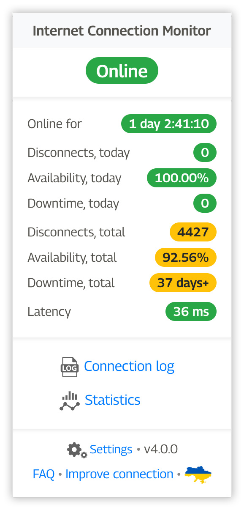
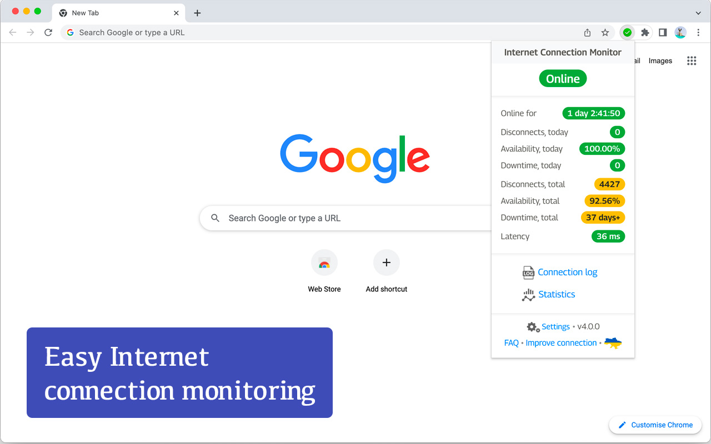
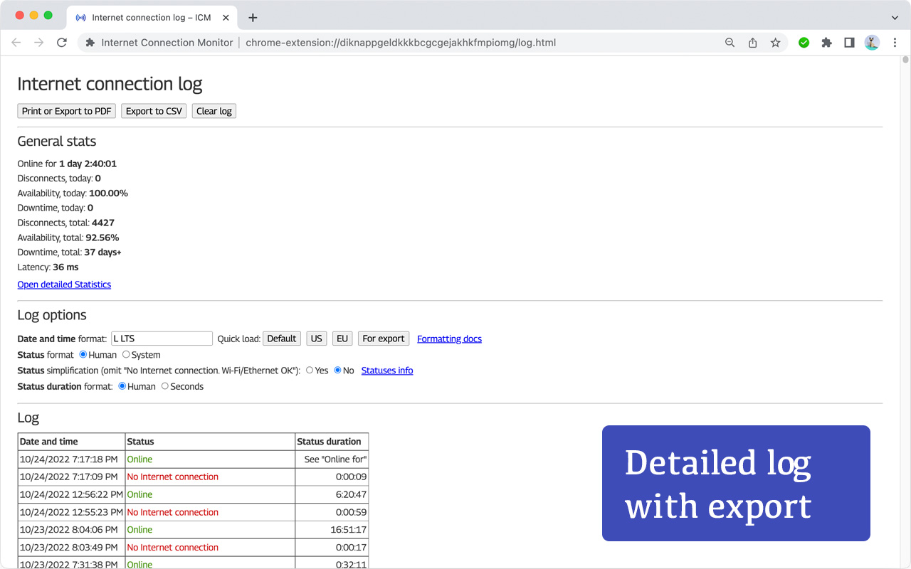

Internet Connection Monitor (ICM)
Google Chrome extension for monitoring Internet connectivity

üéØ ICM IS THE BEST FOR
- Recording and analyzing outages of Internet connection
- Verifying ISP/provider issues
- Verifying some hardware issues
üíª FEATURES
- Precise connectivity test with configurable testing interval
- Latency measurement
- Detect when Internet doesn't work over operating Wi-Fi or Ethernet
- Disconnects, availability and downtime stats
- Play sound when connection goes online or offline
- Events log with CSV export
- Statistics with realtime monitoring
- Retina-ready icon sets
- Light and dark themes support
üöÄ NEW IN ICM v4.0
- Added Downtime stats
- Added Statistics page with realtime monitoring
- Added Status duration to the logging
üì∑ SCREENSHOTS




FAQ
Q: Where is the extension icon?A: At some point Google Chrome changed the way extensions are displayed. You need to click on the puzzle icon to the right of the address bar and then pin Internet Connection Monitor

Q: What exactly can be monitored?
A: The extension monitors the Internet connection and reports 3 statuses:
- üü¢ Online: Internet connected
- üü† Connection issues: if Chrome itself cannot properly determine whether Internet connection is down while you're connected to Wi-Fi/Ethernet - this status will popup. Most likely, your Wi-Fi/Ethernet cable is connected, but there is no Internet connection behind it. In most cases, it is ISP/provider issue
- üî¥ Offline: Internet disconnected. Wi-Fi/Ethernet may work or not, but Internet itself is unavailable
A: The extension uses a combination of Chrome internal API and pinging Google servers via https (port 443). It does not expose any open ports or something else that could compromise user's security
Q: What is the testing interval?
A: How frequently to ping Google servers to determine the status of Internet connection. The option is configurable: check very 1, 2, 3 or 5 seconds
Q: Does this extension have access to my browsing history, etc?
A: It does NOT. Moreover, it does not require any special access at all (you can notice that other extensions ask you to give them some permissions during the installation process)
Q: Can this extension measure Internet speed?
A: It cannot. Please, use Speedtest by Ookla
Q: Will it work if Chrome is closed?
A: Not, it will not. You need to have a Chrome window open to track your connection log. It's relatively easy to add Chrome to autostart on Windows, Mac or Linux
Q: Will it work if computer is in sleep?
A: Yes, it should work, but the mechanism of tracking the disconnects while the computer is in sleep has not been thoroughly tested. Macs, for example, wake up every couple minutes and ICM checks the connection. But do not rely on precise measurement during the computer sleep, keep the computer running
Q: Can you use it on Microsoft EDGE?
A: Yes, you can
Q: Is there a Firefox extension?
A: Currently, only Google Chrome and Microsoft Edge are supported
Q: Can you give an advice on how to improve Internet connection overall?
A: Read the article about the 3 primary reasons of Internet connection issues
Icons by svgrepo.com and flaticon.com
Privacy Policy
ICM Privacy PolicySupport
For support, questions and suggestions: open extension's page in Chrome store and then click on the Support tabAlternatively, for suggestions, ideas and feature requests: go to ICM issues page on GitHub
Made with ‚ù§Ô∏è in üá∫üá¶
© Dmytro Shcherbyna 2014-2022
© Dmytro Shcherbyna 2014-2022